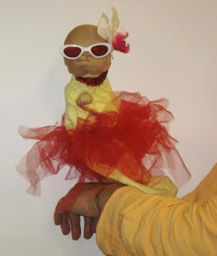

Baby Wah Wah
8/23/2010
{kind=link}

Harris Deutsch
Once a quarter I do a puppet workshop for 7th grade students. This puppet, Baby Gaga, is an example of using the concept of familiarity. Most people in the class will know of the singer Lady Gaga. I helped make her, my wife along with my mother actually did most of the work.
In the beginning of the routine, I play a blues run on my harmonica and have her sing in "baby". Wah wahs instead of words. Then I "interpret", by having her Mime sing (as you noticed no moving mouth), while I provide the words.
Sometimes I use the Nursery Rhyme Blues ( a song I thought I created, but found many others have come up with similar ideas). Singing things like, "Humpty Dumpty - sat on a wall", then wail a bit of a blues run on the harmonica...) In some class rooms and even adult venues, audience members will join in and add a nursery rhyme of their own.
Also at other times I combine known lyrics, with improvised words...
Woke up this morning ,
I woke up 3 times last night.
got a funny feeling,
my parents don't treat me right.
Looked at my diaper..
it was no fun..
something was oozing out the corner
like mustard on a bun...
(From an old Garrison Keillor Radio Show that stuck in my memory)
Her flower has been replaced by an aluminum foil bonnet. Yesterday I started work on a paint brush puppet. Got the idea from a classroom video on puppet making where a puppet was made from a wooden spoon. I changed it to the brush because the built in "crew cut" hair.
Be safe,well and creative..